# install packages
install.packages("quanteda")
install.packages("dplyr")
install.packages("stringr")
install.packages("ggplot2")
install.packages("tm")
install.packages("udpipe")
install.packages("tidytext")
install.packages("wordcloud2")
install.packages("quanteda.textstats")
install.packages("quanteda.textplots")
install.packages("ggraph")
install.packages("flextable")
# install klippy for copy-to-clipboard button in code chunks
install.packages("remotes")
remotes::install_github("rlesur/klippy")Practical Overview of Selected Text Analytics Methods

Introduction

This tutorial introduces Text Analysis (see Bernard and Ryan; Kabanoff; Popping), i.e. computer-based analysis of language data or the (semi-)automated extraction of information from text.
Please cite as:
Schweinberger, Martin. 2023. Practical Overview of Selected Text Analytics Methods. Brisbane: The Language Technology and Data Analysis Laboratory (LADAL). url: https://ladal.edu.au/textanalysis.html (Version 2023.09.24).
Most of the applications of Text Analysis are based upon a relatively limited number of key procedures or concepts (e.g. concordancing, word frequencies, annotation or tagging, collocation, text classification, Sentiment Analysis, Entity Extraction, Topic Modeling, etc.). In the following, we will explore these procedures and introduce some basic tools that help you perform the introduced tasks.
To be able to follow this tutorial, we suggest you check out and familiarize yourself with the content of the following R Basics tutorials:
- Getting started with R
- Loading, saving, and generating data in R
- String Processing in R
- Regular Expressions in R
Click here1 to download the entire R Notebook for this tutorial.

Click here to open an interactive Jupyter notebook that allows you to execute, change, and edit the code as well as to upload your own data.
Preparation and session set up
This tutorial is based on R. If you’re new to R or haven’t installed it yet, you can find an introduction and installation instructions here. To ensure the scripts below run smoothly, we need to install specific R packages from a library. If you’ve already installed these packages, you can skip this section. To install them, run the code below (which may take 1 to 5 minutes).
Once all packages are installed, you can activate them bu executing (running) the code chunk below.
# load packages
library(dplyr)
library(stringr)
library(ggplot2)
library(flextable)
library(quanteda)
library(tm)
library(udpipe)
library(tidytext)
library(wordcloud2)
library(flextable)
library(quanteda.textstats)
library(quanteda.textplots)
library(ggraph)
library(tidyr)
# activate klippy for copy-to-clipboard button
klippy::klippy()Once you have initiated the session by executing the code shown above, you are good to go.
Concordancing
In Text Analysis, concordancing refers to the extraction of words from a given text or texts (Lindquist). Commonly, concordances are displayed in the form of key-word in contexts (KWIC) where the search term is shown with some preceding and following context. Thus, such displays are referred to as key word in context concordances. A more elaborate tutorial on how to perform concordancing with R is available here.
Concordancing is a text analysis technique that retrieves and displays occurrences of a chosen word or phrase within a text or dataset, showing the surrounding context. It’s used to examine word usage, context, and linguistic patterns for research and language analysis purposes.

Concordancing is a valuable tool that helps us understand how a term is used in the data, examine word frequency, extract examples, and serves as a fundamental step for more advanced language data analyses.
In the following section, we’ll use R to explore text, using Lewis Carroll’s Alice’s Adventures in Wonderland as our example text. We’ll start by loading the text data, which is available from the LADAL GitHub repository for this tutorial. If you’re interested in loading your own data, you can refer to this tutorial.
We start by loading our example text.
# load text
text <- base::readRDS(url("https://slcladal.github.io/data/alice.rda", "rb")). |
|---|
Alice’s Adventures in Wonderland |
by Lewis Carroll |
CHAPTER I. |
Down the Rabbit-Hole |
Alice was beginning to get very tired of sitting by her sister on the |
bank, and of having nothing to do: once or twice she had peeped into |
The data still consists of short text snippets which is why we collapse these snippets and then split the collapsed data into chapters.
# combine and split into chapters
text_chapters <- text %>%
# paste all texts together into one long text
paste0(collapse = " ") %>%
# replace Chapter I to Chapter XVI with qwertz
stringr::str_replace_all("(CHAPTER [XVI]{1,7}\\.{0,1}) ", "qwertz\\1") %>%
# convert text to lower case
tolower() %>%
# split the long text into chapters
stringr::str_split("qwertz") %>%
# unlist the result (convert into simple vector)
unlist(). |
|---|
alice’s adventures in wonderland by lewis carroll |
chapter i.down the rabbit-hole alice was beginning to get very tired of sitting by her sister on the bank, and of having nothing to do: once or twice she had peeped into the book her sister was reading, but it had no pictures or conversations in it, “and what is the use of a book,” thought alice “without pictures or conversations?” so she was considering in her own mind (as well as she could, for the hot day made her feel very sleepy and stupid), whether the pleasure of making a daisy-chain woul |
chapter ii.the pool of tears “curiouser and curiouser!” cried alice (she was so much surprised, that for the moment she quite forgot how to speak good english); “now i’m opening out like the largest telescope that ever was! good-bye, feet!” (for when she looked down at her feet, they seemed to be almost out of sight, they were getting so far off). “oh, my poor little feet, i wonder who will put on your shoes and stockings for you now, dears? i’m sure _i_ shan’t be able! i shall be a great deal t |
chapter iii.a caucus-race and a long tale they were indeed a queer-looking party that assembled on the bank—the birds with draggled feathers, the animals with their fur clinging close to them, and all dripping wet, cross, and uncomfortable. the first question of course was, how to get dry again: they had a consultation about this, and after a few minutes it seemed quite natural to alice to find herself talking familiarly with them, as if she had known them all her life. indeed, she had quite a l |
chapter iv.the rabbit sends in a little bill it was the white rabbit, trotting slowly back again, and looking anxiously about as it went, as if it had lost something; and she heard it muttering to itself “the duchess! the duchess! oh my dear paws! oh my fur and whiskers! she’ll get me executed, as sure as ferrets are ferrets! where _can_ i have dropped them, i wonder?” alice guessed in a moment that it was looking for the fan and the pair of white kid gloves, and she very good-naturedly began hu |
chapter v.advice from a caterpillar the caterpillar and alice looked at each other for some time in silence: at last the caterpillar took the hookah out of its mouth, and addressed her in a languid, sleepy voice. “who are _you?_” said the caterpillar. this was not an encouraging opening for a conversation. alice replied, rather shyly, “i—i hardly know, sir, just at present—at least i know who i _was_ when i got up this morning, but i think i must have been changed several times since then.” “wha |
After dividing the data into chapters, we conduct concordancing and extract KWICs (KeyWord In Context). This is accomplished using the kwic function from the quanteda package, which requires three main arguments: the data (x), the search pattern (pattern), and the window size.
To begin, we’ll create KWICs for the term alice using the kwic function from the quanteda package, as demonstrated below.
The kwic function in the quanteda package extracts KeyWord In Context (KWIC) information. Its main arguments are x (text data), pattern (search term), and window (context size) to display words around the pattern.
# create kwic
kwic_alice <- quanteda::kwic(
x = quanteda::tokens(text_chapters), # define text(s)
# define pattern
pattern = "alice",
# define window size
window = 5
) %>%
# convert into a data frame
as.data.frame() %>%
# remove superfluous columns
dplyr::select(-to, -from, -pattern)docname | pre | keyword | post |
|---|---|---|---|
text2 | chapter i.down the rabbit-hole | alice | was beginning to get very |
text2 | a book , ” thought | alice | “ without pictures or conversations |
text2 | in that ; nor did | alice | think it so _very_ much |
text2 | and then hurried on , | alice | started to her feet , |
text2 | in another moment down went | alice | after it , never once |
text2 | down , so suddenly that | alice | had not a moment to |
In our search, we have the flexibility to utilize regular expressions, allowing us to extract not only straightforward terms like alice but also more intricate and even abstract patterns. An abstract pattern may involve only a part of the term being specified. For example, if we specify walk, we can retrieve words like walking, walker, walked, and walks that contain this sequence. To effectively capture such abstract patterns, we employ what are known as regular expressions.
When incorporating a regular expression in the pattern argument, it’s crucial to specify the valuetype as regex, as illustrated below.
# create kwic
kwic_walk <- quanteda::kwic(
x = quanteda::tokens(text_chapters), # define text(s)
pattern = "walk.*",
window = 5,
valuetype = "regex"
) %>%
# convert into a data frame
as.data.frame() %>%
# remove superfluous columns
dplyr::select(-to, -from, -pattern)docname | pre | keyword | post |
|---|---|---|---|
text2 | out among the people that | walk | with their heads downward ! |
text2 | to dream that she was | walking | hand in hand with dinah |
text2 | trying every door , she | walked | sadly down the middle , |
text3 | “ or perhaps they won’t | walk | the way i want to |
text4 | mouse , getting up and | walking | away . “ you insult |
text4 | its head impatiently , and | walked | a little quicker . “ |
text5 | and get ready for your | walk | ! ’ ‘ coming in |
text7 | , “ if you only | walk | long enough . ” alice |
text7 | a minute or two she | walked | on in the direction in |
text7 | high : even then she | walked | up towards it rather timidly |
When searching for expressions that represent phrases consisting of multiple elements, like poor alice, it’s essential to explicitly specify in the pattern argument that we are searching for a phrase.
# create kwic
kwic_pooralice <- quanteda::kwic(
x = quanteda::tokens(text_chapters), # define text(s)
pattern = quanteda::phrase("poor alice"),
window = 5
) %>%
# convert into a data frame
as.data.frame() %>%
# remove superfluous columns
dplyr::select(-to, -from, -pattern)docname | pre | keyword | post |
|---|---|---|---|
text2 | go through , ” thought | poor alice | , “ it would be |
text2 | ; but , alas for | poor alice | ! when she got to |
text2 | use now , ” thought | poor alice | , “ to pretend to |
text3 | to the garden door . | poor alice | ! it was as much |
text3 | right words , ” said | poor alice | , and her eyes filled |
text4 | mean it ! ” pleaded | poor alice | . “ but you’re so |
We could continue our analysis by exploring in greater detail how the phrase poor alice is used in context, perhaps by adjusting the context window size or conducting similar investigations. However, for now, we’ll shift our focus to learning how to extract and work with word frequencies.
Word Frequency
Frequency information is a cornerstone of text analytics, underpinning nearly all analytical methods. Identifying the most common words within a text is a fundamental technique in text analytics, serving as the bedrock of text analysis. This frequency data is typically organized into word frequency lists, which consist of word forms and their corresponding frequencies within a given text or collection of texts.
Given the paramount importance of extracting word frequency lists, we will proceed to demonstrate how to do so. In the first step, we’ll continue with our example text, convert the chapters to lowercase, eliminate non-word symbols (including punctuation), and then break down the text (the chapters) into individual words.
# process the text and save result in "text_words"
text_words <- text %>%
# convert all text to lowercase
tolower() %>%
# remove non-word characters, keeping spaces
str_replace_all("[^[:alpha:][:space:]]*", "") %>%
# remove punctuation
tm::removePunctuation() %>%
# squish consecutive spaces into a single space
stringr::str_squish() %>%
# split the text into individual words, separated by spaces
stringr::str_split(" ") %>%
# unlist the result into a single vector of words
unlist(). |
|---|
alices |
adventures |
in |
wonderland |
by |
lewis |
carroll |
chapter |
i |
down |
the |
rabbithole |
alice |
was |
beginning |
With our word vector in hand, let’s effortlessly construct a table that showcases a word frequency list, as demonstrated below.
# Create a word frequency table from the 'text_words' data
wfreq <- text_words %>%
# count the frequency of each unique word
table() %>%
# convert the frequency table into a data frame
as.data.frame() %>%
# arrange the data frame rows in descending order of word frequency
arrange(desc(Freq)) %>%
# rename the columns for clarity
dplyr::rename(
word = 1,
frequency = 2
)word | frequency |
|---|---|
the | 1,630 |
and | 844 |
to | 721 |
a | 627 |
she | 537 |
it | 526 |
of | 508 |
said | 462 |
i | 400 |
alice | 385 |
in | 366 |
you | 360 |
was | 357 |
that | 276 |
as | 262 |
The most common words often consist of function words that may lack significance. To enhance our analysis, we’ll eliminate these function words, often referred to as stopwords, from the frequency list. Let’s take a look at the refined list without stopwords.
# create table wo stopwords
wfreq_wostop <- wfreq %>%
anti_join(tidytext::stop_words, by = "word") %>%
dplyr::filter(word != "")word | frequency |
|---|---|
alice | 385 |
queen | 68 |
time | 68 |
king | 61 |
dont | 60 |
im | 57 |
mock | 56 |
turtle | 56 |
gryphon | 55 |
hatter | 55 |
head | 48 |
voice | 47 |
looked | 45 |
rabbit | 43 |
round | 41 |
Word frequency lists can be presented visually in several ways, with bar graphs being the most common and intuitive choice for visualization.
wfreq_wostop %>%
head(10) %>%
ggplot(aes(x = reorder(word, -frequency, mean), y = frequency)) +
geom_bar(stat = "identity") +
labs(
title = "10 most frequent non-stop words \nin the example text",
x = ""
) +
theme(axis.text.x = element_text(angle = 45, size = 12, hjust = 1))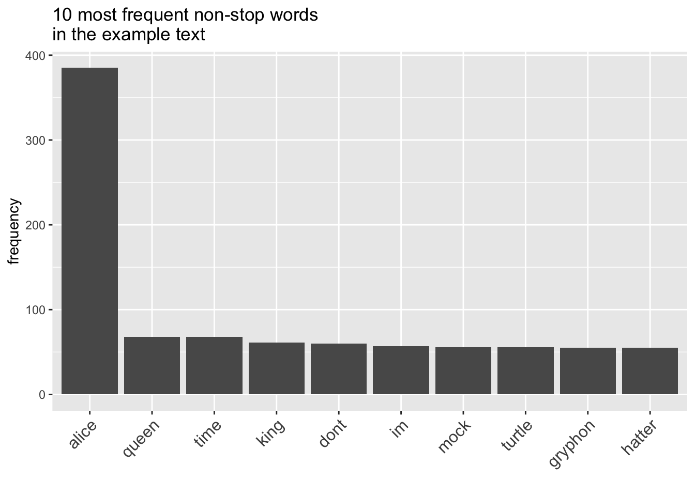
Wordclouds
Alternatively, word frequency lists can be visually represented as word clouds, though they provide less detailed information. Word clouds are visual representations where words appear larger based on their frequency, offering a quick visual summary of word importance in a dataset.
# create a word cloud visualization
text %>%
# Convert text data to a quanteda corpus
quanteda::corpus() %>%
# tokenize the corpus, removing punctuation
quanteda::tokens(remove_punct = TRUE) %>%
# remove English stopwords
quanteda::tokens_remove(stopwords("english")) %>%
# create a document-feature matrix (DFM)
quanteda::dfm() %>%
# generate a word cloud using textplot_wordcloud
quanteda.textplots::textplot_wordcloud(
# maximum words to display in the word cloud
max_words = 150,
# determine the maximum size of words
max_size = 10,
# determine the minimum size of words
min_size = 1.5,
# Define a color palette for the word cloud
color = scales::viridis_pal(option = "A")(10)
)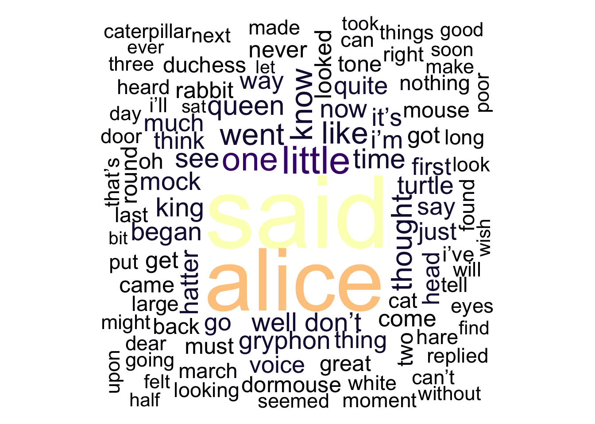
The textplot_wordcloud function creates a word cloud visualization of text data in R. Its main arguments are x (a Document-Feature Matrix or DFM), max_words (maximum words to display), and color (color palette for the word cloud).
Another form of word clouds, known as comparison clouds, is helpful in discerning disparities between texts. For instance, we can load various texts and assess how they vary in terms of word frequencies. To illustrate this, we’ll load Herman Melville’s Moby Dick, George Orwell’s 1984, and Charles Darwin’s Origin.
First, we’ll load these texts and combine them into single documents.
# load data
orwell_sep <- base::readRDS(url("https://slcladal.github.io/data/orwell.rda", "rb"))
orwell <- orwell_sep %>%
paste0(collapse = " ")
melville_sep <- base::readRDS(url("https://slcladal.github.io/data/melville.rda", "rb"))
melville <- melville_sep %>%
paste0(collapse = " ")
darwin_sep <- base::readRDS(url("https://slcladal.github.io/data/darwin.rda", "rb"))
darwin <- darwin_sep %>%
paste0(collapse = " ")Now, we generate a corpus object from these texts and create a variable with the author name.
corp_dom <- quanteda::corpus(c(darwin, melville, orwell))
attr(corp_dom, "docvars")$Author <- c("Darwin", "Melville", "Orwell")Now, we can remove so-called stopwords (non-lexical function words) and punctuation and generate the comparison cloud.
# create a comparison word cloud for a corpus
corp_dom %>%
# tokenize the corpus, removing punctuation, symbols, and numbers
quanteda::tokens(
remove_punct = TRUE,
remove_symbols = TRUE,
remove_numbers = TRUE
) %>%
# remove English stopwords
quanteda::tokens_remove(stopwords("english")) %>%
# create a Document-Feature Matrix (DFM)
quanteda::dfm() %>%
# group the DFM by the 'Author' column from 'corp_dom'
quanteda::dfm_group(groups = corp_dom$Author) %>%
# trim the DFM, keeping terms that occur at least 10 times
quanteda::dfm_trim(min_termfreq = 10, verbose = FALSE) %>%
# generate a comparison word cloud
quanteda.textplots::textplot_wordcloud(
# create a comparison word cloud
comparison = TRUE,
# set colors for different groups
color = c("darkgray", "orange", "purple"),
# define the maximum number of words to display in the word cloud
max_words = 150
)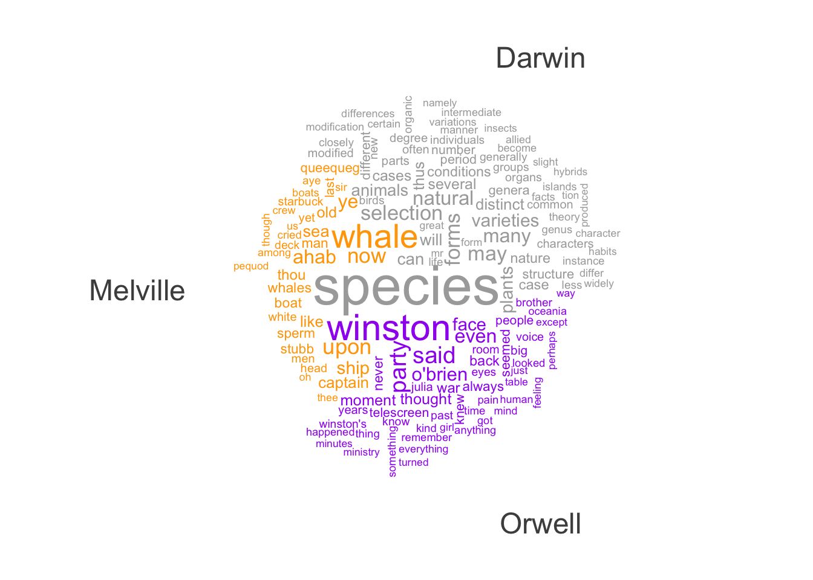
Frequency changes
We can also explore how the term alice is used throughout the chapters of our example text. To begin, let’s extract the word count for each chapter.
# extract the number of words per chapter
Words <- text_chapters %>%
# split each chapter into words based on spaces
stringr::str_split(" ") %>%
# measure the length (number of words) in each chapter
lengths()
# display the resulting data, which contains the word counts per chapter
Words [1] 8 2364 2125 1765 2616 2339 2609 2307 2487 2272 2058 1886 2153Next, we extract the number of matches in each chapter.
# extract the number of matches of "alice" per chapter
Matches <- text_chapters %>%
# count the number of times "alice" appears in each chapter
stringr::str_count("alice")
# display the resulting data, which shows the number of matches of "alice" per chapter
Matches [1] 1 28 26 23 31 35 43 51 39 52 30 16 23Now, we extract the names of the chapters and create a table with the chapter names and the relative frequency of matches per 1,000 words.
# extract chapters
Chapters <- paste0("chapter", 0:(length(text_chapters) - 1))
Chapters [1] "chapter0" "chapter1" "chapter2" "chapter3" "chapter4" "chapter5"
[7] "chapter6" "chapter7" "chapter8" "chapter9" "chapter10" "chapter11"
[13] "chapter12"Next, we combine the information in a single data frame and add a column containing the relative frequency of alice in each chapter.
# create table of results
tb <- data.frame(Chapters, Matches, Words) %>%
# create new variable with the relative frequency
dplyr::mutate(Frequency = round(Matches / Words * 1000, 2)) %>%
# reorder chapters
dplyr::mutate(Chapters = factor(Chapters, levels = c(paste0("chapter", 0:12))))Chapters | Matches | Words | Frequency |
|---|---|---|---|
chapter0 | 1 | 8 | 125.00 |
chapter1 | 28 | 2,364 | 11.84 |
chapter2 | 26 | 2,125 | 12.24 |
chapter3 | 23 | 1,765 | 13.03 |
chapter4 | 31 | 2,616 | 11.85 |
chapter5 | 35 | 2,339 | 14.96 |
chapter6 | 43 | 2,609 | 16.48 |
chapter7 | 51 | 2,307 | 22.11 |
chapter8 | 39 | 2,487 | 15.68 |
chapter9 | 52 | 2,272 | 22.89 |
chapter10 | 30 | 2,058 | 14.58 |
chapter11 | 16 | 1,886 | 8.48 |
chapter12 | 23 | 2,153 | 10.68 |
Now, let’s visualize the relative frequencies of our search term in each chapter.
# create a plot using ggplot
ggplot(tb, aes(x = Chapters, y = Frequency, group = 1)) +
# add a smoothed line (trendline) in purple color
geom_smooth(color = "purple") +
# add a line plot in dark gray color
geom_line(color = "darkgray") +
# remove fill from the legend
guides(color = guide_legend(override.aes = list(fill = NA))) +
# set a white and black theme
theme_bw() +
# rotate x-axis text by 45 degrees and adjust alignment
theme(axis.text.x = element_text(angle = 45, hjust = 1)) +
# customize the y-axis label
scale_y_continuous(name = "Relative Frequency (per 1,000 words)")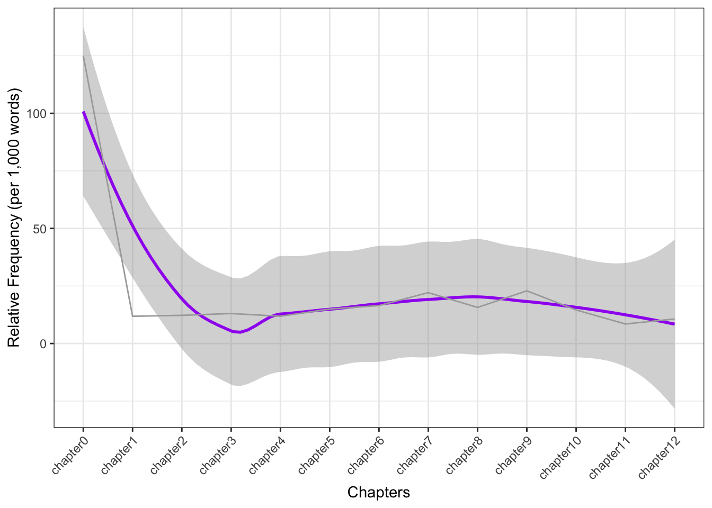
Dispersion plots
To show when in a text or in a collection of texts certain terms occur, we can use dispersion plots. The quanteda package offers a very easy-to-use function textplot_xray to generate dispersion plots.
# add chapter names
names(text_chapters) <- Chapters
# generate corpus from chapters
# Assuming text_chapters is your character vector
# text_corpus <- quanteda::corpus(text_chapters)
# Create a tokens object
text_corpus <- quanteda::tokens(text_chapters)
# generate dispersion plots
quanteda.textplots::textplot_xray(kwic(text_corpus, pattern = "alice"),
kwic(text_corpus, pattern = "hatter"),
sort = T
)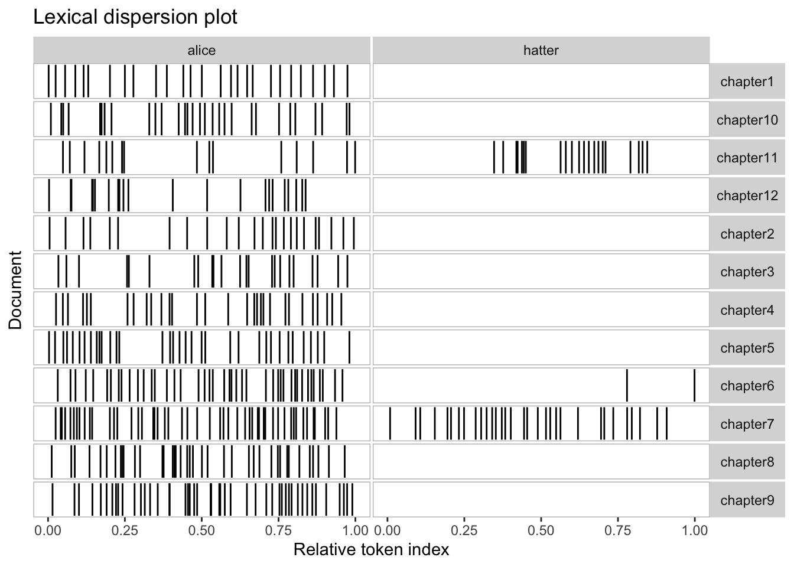
We can modify the plot by saving it into an object and then use ggplot to modify it appearance.
# generate and save dispersion plots
dp <- quanteda.textplots::textplot_xray(
kwic(text_corpus, pattern = "alice"),
kwic(text_corpus, pattern = "cat")
)
# modify plot
dp + aes(color = keyword) +
scale_color_manual(values = c("red", "blue")) +
theme(legend.position = "none")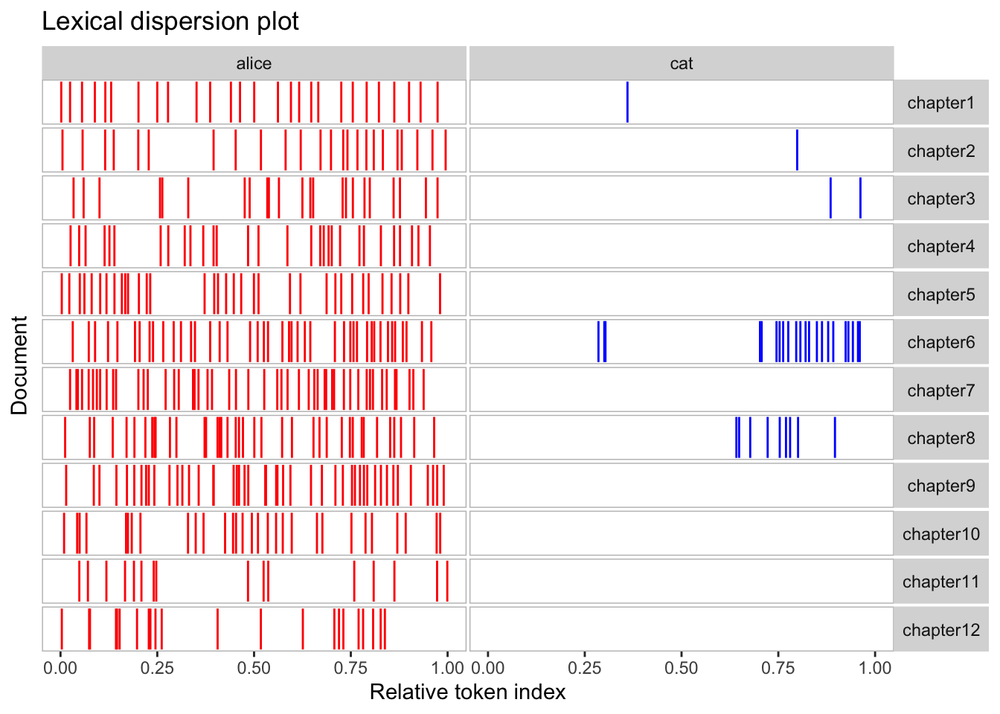
Over- and underuse
Frequency data serves as a valuable lens through which we can explore the essence of a text. For instance, when we examine private dialogues, we often encounter higher occurrences of second-person pronouns compared to more formal text types like scripted monologues or speeches. This insight holds the potential to aid in text classification and assessing text formality.
To illustrate, consider the following statistics: the counts of second-person pronouns, you and your, as well as the total word count excluding these pronouns in private dialogues versus scripted monologues within the Irish segment of the International Corpus of English (ICE). Additionally, the tables provide the percentage of second-person pronouns in both text types, enabling us to discern whether private dialogues indeed contain more of these pronouns compared to scripted monologues, such as speeches.
. | Private dialogues | Scripted monologues |
|---|---|---|
you, your | 6761 | 659 |
Other words | 259625 | 105295 |
Percent | 2.60 | 0.63 |
This straightforward example highlights that second-person pronouns constitute 2.6 percent of all words in private dialogues, yet they represent only 0.63 percent in scripted speeches. To vividly illustrate such variations, we can employ association and mosaic plots, which offer effective visual presentations.
# create a matrix 'd' with the specified values and dimensions
d <- matrix(c(6761, 659, 259625, 105295), nrow = 2, byrow = TRUE)
# assign column names to the matrix
colnames(d) <- c("D", "M")
# assign row names to the matrix
rownames(d) <- c("you, your", "Other words")
# generate an association plot using 'assocplot' function
assocplot(d)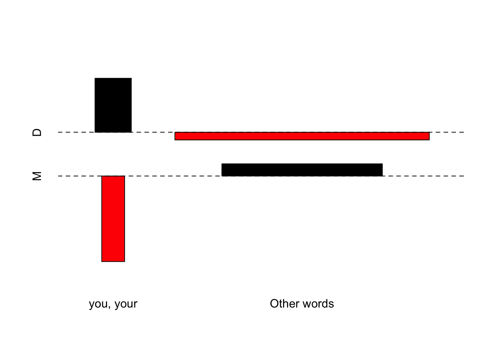
In an association plot, bars above the dashed line signify relative overuse, while bars below indicate relative underuse. Accordingly, the plot reveals that in monologues, there’s an underuse of you and your and an overuse of other words. Conversely, in dialogues, the opposite patterns emerge: an overuse of you and your and an underuse of other words. This visual representation helps us grasp the distinctive word usage patterns between these text types.
Collocations
Collocations are like linguistic buddies. They’re those word pairs that just seem to go hand in hand, like Merry Christmas. You see, these words have a special relationship – they occur together way more often than if words were just randomly strung together in a sentence.
Before we start tough, it is important to understand that identifying words pairs (w1 and w2) that collocate (i.e. collocations) and determining their association strength (a measure of how strongly attracted words are to each other) is based on the co-occurrence frequencies of word pairs in a contingency table (see below, O is short for observed frequency).
| w2 present | w2 absent | ||
|---|---|---|---|
| w1 present | O11 | O12 | = R1 |
| w1 absent | O21 | O22 | = R2 |
| = C1 | = C2 | = N |
In the following, we will extract collocations from the sentences in our example text. In a first step, we split our example text into sentences and clean the data (removing punctuation, converting to lower case, etc.).
text %>%
# concatenate the elements in the 'text' object
paste0(collapse = " ") %>%
# split text into sentences
tokenizers::tokenize_sentences() %>%
# unlist sentences
unlist() %>%
# remove non-word characters
stringr::str_replace_all("\\W", " ") %>%
stringr::str_replace_all("[^[:alnum:] ]", " ") %>%
# remove superfluous white spaces
stringr::str_squish() %>%
# convert to lower case and save in 'sentences' object
tolower() -> sentences. |
|---|
alice s adventures in wonderland by lewis carroll chapter i |
down the rabbit hole alice was beginning to get very tired of sitting by her sister on the bank and of having nothing to do once or twice she had peeped into the book her sister was reading but it had no pictures or conversations in it and what is the use of a book thought alice without pictures or conversations |
so she was considering in her own mind as well as she could for the hot day made her feel very sleepy and stupid whether the pleasure of making a daisy chain would be worth the trouble of getting up and picking the daisies when suddenly a white rabbit with pink eyes ran close by her |
there was nothing so very remarkable in that nor did alice think it so very much out of the way to hear the rabbit say to itself oh dear |
oh dear |
i shall be late |
when she thought it over afterwards it occurred to her that she ought to have wondered at this but at the time it all seemed quite natural but when the rabbit actually took a watch out of its waistcoat pocket and looked at it and then hurried on alice started to her feet for it flashed across her mind that she had never before seen a rabbit with either a waistcoat pocket or a watch to take out of it and burning with curiosity she ran across the field after it and fortunately was just in time to see it pop down a large rabbit hole under the hedge |
in another moment down went alice after it never once considering how in the world she was to get out again |
the rabbit hole went straight on like a tunnel for some way and then dipped suddenly down so suddenly that alice had not a moment to think about stopping herself before she found herself falling down a very deep well |
either the well was very deep or she fell very slowly for she had plenty of time as she went down to look about her and to wonder what was going to happen next |
Next, we tabulate the data and reformat it so that we have the relevant information to calculate the association statistics (word 1 and word 2 as well as O11, O12, O21, and O22).
# tokenize the 'sentences' data using quanteda package
sentences %>%
quanteda::tokens() %>%
# create a document-feature matrix (dfm) using quanteda
quanteda::dfm() %>%
# create a feature co-occurrence matrix (fcm) without considering trigrams
quanteda::fcm(tri = FALSE) %>%
# tidy the data using tidytext package
tidytext::tidy() %>%
# rearrange columns for better readability
dplyr::relocate(term, document, count) %>%
# rename columns for better interpretation
dplyr::rename(
w1 = 1,
w2 = 2,
O11 = 3
) -> coll_basicw1 | w2 | O11 |
|---|---|---|
alice | alice | 11 |
alice | s | 67 |
alice | adventures | 6 |
alice | in | 137 |
alice | wonderland | 1 |
alice | by | 18 |
alice | lewis | 1 |
alice | carroll | 1 |
alice | chapter | 1 |
alice | i | 163 |
We now enhance our table by calculating all observed frequencies (O11, O12, O21, O22) as well as row totals (R1, R2), column totals (C1, C2), and the overall total (N).
# calculate the total number of observations (N)
coll_basic %>%
dplyr::mutate(N = sum(O11)) %>%
# calculate R1, O12, and R2
dplyr::group_by(w1) %>%
dplyr::mutate(
R1 = sum(O11),
O12 = R1 - O11,
R2 = N - R1
) %>%
dplyr::ungroup(w1) %>%
# calculate C1, O21, C2, and O22
dplyr::group_by(w2) %>%
dplyr::mutate(
C1 = sum(O11),
O21 = C1 - O11,
C2 = N - C1,
O22 = R2 - O21
) -> colldfw1 | w2 | O11 | N | R1 | O12 | R2 | C1 | O21 | C2 | O22 |
|---|---|---|---|---|---|---|---|---|---|---|
alice | alice | 11 | 890,202 | 9,690 | 9,679 | 880,512 | 9,690 | 9,679 | 880,512 | 870,833 |
alice | s | 67 | 890,202 | 9,690 | 9,623 | 880,512 | 4,812 | 4,745 | 885,390 | 875,767 |
alice | adventures | 6 | 890,202 | 9,690 | 9,684 | 880,512 | 263 | 257 | 889,939 | 880,255 |
alice | in | 137 | 890,202 | 9,690 | 9,553 | 880,512 | 12,600 | 12,463 | 877,602 | 868,049 |
alice | wonderland | 1 | 890,202 | 9,690 | 9,689 | 880,512 | 229 | 228 | 889,973 | 880,284 |
alice | by | 18 | 890,202 | 9,690 | 9,672 | 880,512 | 2,131 | 2,113 | 888,071 | 878,399 |
alice | lewis | 1 | 890,202 | 9,690 | 9,689 | 880,512 | 9 | 8 | 890,193 | 880,504 |
alice | carroll | 1 | 890,202 | 9,690 | 9,689 | 880,512 | 9 | 8 | 890,193 | 880,504 |
alice | chapter | 1 | 890,202 | 9,690 | 9,689 | 880,512 | 20 | 19 | 890,182 | 880,493 |
alice | i | 163 | 890,202 | 9,690 | 9,527 | 880,512 | 11,764 | 11,601 | 878,438 | 868,911 |
We could calculate all collocations in the corpus (based on co-occurrence within the same sentence) or we can find collocations of a specific term - here, we will find collocations fo the term alice.
Now that we have all the relevant information, we will reduce the data and add additional information to the data so that the computing of the association measures runs smoothly.
# reduce and complement data
colldf %>%
# determine Term
dplyr::filter(
w1 == "alice",
# set minimum number of occurrences of w2
(O11 + O21) > 10,
# set minimum number of co-occurrences of w1 and w2
O11 > 5
) %>%
dplyr::rowwise() %>%
dplyr::mutate(
E11 = R1 * C1 / N,
E12 = R1 * C2 / N,
E21 = R2 * C1 / N,
E22 = R2 * C2 / N
) -> colldf_reduxw1 | w2 | O11 | N | R1 | O12 | R2 | C1 | O21 | C2 | O22 | E11 | E12 | E21 | E22 |
|---|---|---|---|---|---|---|---|---|---|---|---|---|---|---|
alice | alice | 11 | 890,202 | 9,690 | 9,679 | 880,512 | 9,690 | 9,679 | 880,512 | 870,833 | 105.47730 | 9,584.523 | 9,584.5227 | 870,927.5 |
alice | s | 67 | 890,202 | 9,690 | 9,623 | 880,512 | 4,812 | 4,745 | 885,390 | 875,767 | 52.37944 | 9,637.621 | 4,759.6206 | 875,752.4 |
alice | adventures | 6 | 890,202 | 9,690 | 9,684 | 880,512 | 263 | 257 | 889,939 | 880,255 | 2.86280 | 9,687.137 | 260.1372 | 880,251.9 |
alice | in | 137 | 890,202 | 9,690 | 9,553 | 880,512 | 12,600 | 12,463 | 877,602 | 868,049 | 137.15314 | 9,552.847 | 12,462.8469 | 868,049.2 |
alice | by | 18 | 890,202 | 9,690 | 9,672 | 880,512 | 2,131 | 2,113 | 888,071 | 878,399 | 23.19630 | 9,666.804 | 2,107.8037 | 878,404.2 |
alice | i | 163 | 890,202 | 9,690 | 9,527 | 880,512 | 11,764 | 11,601 | 878,438 | 868,911 | 128.05314 | 9,561.947 | 11,635.9469 | 868,876.1 |
alice | down | 37 | 890,202 | 9,690 | 9,653 | 880,512 | 3,494 | 3,457 | 886,708 | 877,055 | 38.03278 | 9,651.967 | 3,455.9672 | 877,056.0 |
alice | the | 477 | 890,202 | 9,690 | 9,213 | 880,512 | 53,304 | 52,827 | 836,898 | 827,685 | 580.22310 | 9,109.777 | 52,723.7769 | 827,788.2 |
alice | rabbit | 23 | 890,202 | 9,690 | 9,667 | 880,512 | 1,710 | 1,687 | 888,492 | 878,825 | 18.61364 | 9,671.386 | 1,691.3864 | 878,820.6 |
alice | was | 155 | 890,202 | 9,690 | 9,535 | 880,512 | 13,666 | 13,511 | 876,536 | 867,001 | 148.75673 | 9,541.243 | 13,517.2433 | 866,994.8 |
Now we can calculate the collocation statistics (the association strength).
colldf_redux %>%
# determine number of rows
dplyr::mutate(Rws = nrow(.)) %>%
# work row-wise
dplyr::rowwise() %>%
# calculate fishers' exact test
dplyr::mutate(p = as.vector(unlist(fisher.test(matrix(c(O11, O12, O21, O22),
ncol = 2, byrow = T
))[1]))) %>%
# extract AM
# 1. bias towards top left
dplyr::mutate(
btl_O12 = ifelse(C1 > R1, 0, R1 - C1),
btl_O11 = ifelse(C1 > R1, R1, R1 - btl_O12),
btl_O21 = ifelse(C1 > R1, C1 - R1, C1 - btl_O11),
btl_O22 = ifelse(C1 > R1, C2, C2 - btl_O12),
# 2. bias towards top right
btr_O11 = 0,
btr_O21 = R1,
btr_O12 = C1,
btr_O22 = C2 - R1
) %>%
# 3. calculate AM
dplyr::mutate(
upp = btl_O11 / R1,
low = btr_O11 / R1,
op = O11 / R1
) %>%
dplyr::mutate(AM = op / upp) %>%
# remove superfluous columns
dplyr::select(-btr_O21, -btr_O12, -btr_O22, -btl_O12, -btl_O11, -btl_O21, -btl_O22, -btr_O11) %>%
# extract x2 statistics
dplyr::mutate(X2 = (O11 - E11)^2 / E11 + (O12 - E12)^2 / E12 + (O21 - E21)^2 / E21 + (O22 - E22)^2 / E22) %>%
# extract association measures
dplyr::mutate(
phi = sqrt((X2 / N)),
MI = log2(O11 / E11),
DeltaP12 = (O11 / (O11 + O12)) - (O21 / (O21 + O22)),
DeltaP21 = (O11 / (O11 + O21)) - (O21 / (O12 + O22)),
LogOddsRatio = log(((O11 + 0.5) * (O22 + 0.5)) / ((O12 + 0.5) * (O21 + 0.5)))
) %>%
# determine Bonferroni corrected significance
dplyr::mutate(Sig_corrected = dplyr::case_when(
p / Rws > .05 ~ "n.s.",
p / Rws > .01 ~ "p < .05*",
p / Rws > .001 ~ "p < .01**",
p / Rws <= .001 ~ "p < .001***",
T ~ "N.A."
)) %>%
# round p-value
dplyr::mutate(p = round(p, 5)) %>%
# filter out non significant results
dplyr::filter(
Sig_corrected != "n.s.",
# filter out instances where the w1 and w2 repel each other
E11 < O11
) %>%
# arrange by phi (association measure)
dplyr::arrange(-AM) %>%
# remove superfluous columns
dplyr::select(-any_of(c(
"TermCoocFreq", "AllFreq", "NRows", "E12", "E21",
"E22", "O12", "O21", "O22", "R1", "R2", "C1", "C2"
))) -> assoc_tbw1 | w2 | O11 | N | E11 | Rws | p | upp | low | op | AM | X2 | phi | MI | DeltaP12 | DeltaP21 | LogOddsRatio | Sig_corrected |
|---|---|---|---|---|---|---|---|---|---|---|---|---|---|---|---|---|---|
alice | turning | 7 | 890,202 | 1.621890 | 278 | 0.00132 | 0.01537668 | 0 | 0.0007223942 | 0.04697987 | 18.032827 | 0.004500778 | 2.1096787 | 0.0005611244 | 0.04682032 | 1.5654805 | p < .001*** |
alice | to | 334 | 890,202 | 276.232956 | 278 | 0.00058 | 1.00000000 | 0 | 0.0344685243 | 0.03446852 | 12.571828 | 0.003757984 | 0.2739627 | 0.0060271174 | -0.01579578 | 0.1998464 | p < .001*** |
alice | afraid | 10 | 890,202 | 3.200240 | 278 | 0.00164 | 0.03034056 | 0 | 0.0010319917 | 0.03401361 | 14.611721 | 0.004051412 | 1.6437480 | 0.0007094521 | 0.03369447 | 1.2107100 | p < .001*** |
alice | silent | 6 | 890,202 | 2.187919 | 278 | 0.02361 | 0.02074303 | 0 | 0.0006191950 | 0.02985075 | 6.716520 | 0.002746805 | 1.4554031 | 0.0003977330 | 0.02963165 | 1.1059978 | p < .001*** |
alice | replied | 14 | 890,202 | 5.126915 | 278 | 0.00081 | 0.04860681 | 0 | 0.0014447884 | 0.02972399 | 15.533749 | 0.004177283 | 1.4492639 | 0.0009257722 | 0.02921035 | 1.0586565 | p < .001*** |
alice | thought | 60 | 890,202 | 22.086010 | 278 | 0.00000 | 0.20939112 | 0 | 0.0061919505 | 0.02957122 | 65.951703 | 0.008607335 | 1.4418297 | 0.0039557515 | 0.02735431 | 1.0304387 | p < .001*** |
alice | timidly | 6 | 890,202 | 2.209689 | 278 | 0.02463 | 0.02094943 | 0 | 0.0006191950 | 0.02955665 | 6.574620 | 0.002717635 | 1.4411188 | 0.0003954616 | 0.02933530 | 1.0958173 | p < .001*** |
alice | sir | 6 | 890,202 | 2.318541 | 278 | 0.03016 | 0.02198142 | 0 | 0.0006191950 | 0.02816901 | 5.911290 | 0.002576896 | 1.3717451 | 0.0003841046 | 0.02793643 | 1.0464132 | p < .001*** |
alice | haven | 6 | 890,202 | 2.372967 | 278 | 0.03321 | 0.02249742 | 0 | 0.0006191950 | 0.02752294 | 5.606231 | 0.002509523 | 1.3382704 | 0.0003784260 | 0.02728473 | 1.0225968 | p < .001*** |
alice | cried | 10 | 890,202 | 3.962202 | 278 | 0.00729 | 0.03756450 | 0 | 0.0010319917 | 0.02747253 | 9.305752 | 0.003233192 | 1.3356257 | 0.0006299529 | 0.02707470 | 0.9906554 | p < .001*** |
The resulting table shows collocations in the example text descending by collocation strength.
We now use a network graph, or network for short, to visualise the collocations of our keyword (alice). Networks are a powerful and versatile visual representation used to depict relationships or connections among various elements. Network graphs typically consist of nodes, representing individual entities, and edges, indicating the connections or interactions between these entities.
We start by extracting the tokens that we want to show (the top 20 collocates of alice).
# sort the coocStatz data frame in descending order based on the 'phi' column
top20colls <- assoc_tb %>%
dplyr::arrange(-phi) %>%
# select the top 20 rows after sorting
head(20) %>%
# extract the 'token' column
dplyr::pull(w2) %>%
# add keyword
c("alice")
# inspect the top 20 tokens with the highest 'phi' values
top20colls [1] "said" "thought" "very" "turning" "replied" "afraid" "to"
[8] "i" "cried" "much" "nothing" "think" "silent" "say"
[15] "timidly" "glad" "t" "sir" "looked" "please" "alice" We then need to generate a feature co-occurrence matrix from a document-feature matrix based on the cleaned, lower case sentences of our text.
# tokenize the 'sentences' data using quanteda package
keyword_fcm <- sentences %>%
quanteda::tokens() %>%
# create a document-feature matrix (dfm) from the tokens
quanteda::dfm() %>%
# select features based on 'top20colls' and the term "selection" pattern
quanteda::dfm_select(pattern = c(top20colls, "selection")) %>%
# Create a symmetric feature co-occurrence matrix (fcm)
quanteda::fcm(tri = FALSE)
# inspect the first 6 rows and 6 columns of the resulting fcm
keyword_fcm[1:6, 1:6]Feature co-occurrence matrix of: 6 by 6 features.
features
features alice i to very nothing thought
alice 11 163 334 86 18 60
i 163 269 307 48 12 33
to 334 307 321 155 32 68
very 86 48 155 12 5 12
nothing 18 12 32 5 0 4
thought 60 33 68 12 4 0# create a network plot using the fcm
quanteda.textplots::textplot_network(keyword_fcm,
# set the transparency of edges to 0.8 for visibility
edge_alpha = 0.8,
# set the color of edges to gray
edge_color = "gray",
# set the size of edges to 2 for better visibility
edge_size = 2,
# adjust the size of vertex labels
# based on the logarithm of row sums of the fcm
vertex_labelsize = log(rowSums(keyword_fcm))
)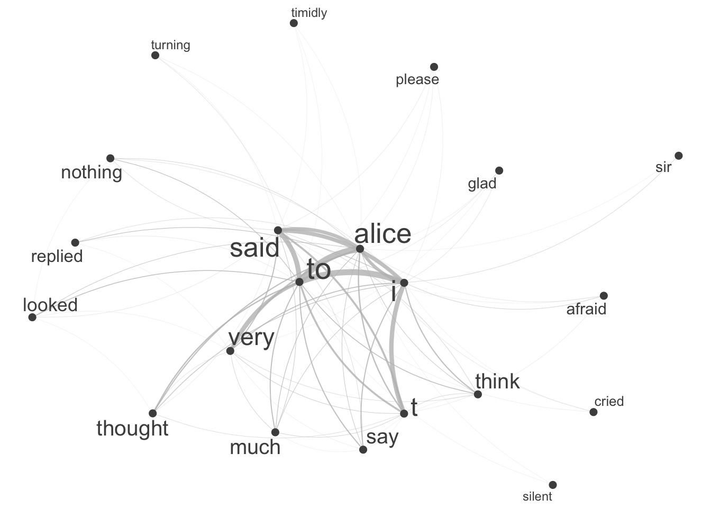
Keywords
Keywords play a pivotal role in text analysis, serving as distinctive terms that hold particular significance within a given text, context, or collection. This approach revolves around pinpointing words closely associated with a specific text. In simpler terms, keyness analysis strives to identify words that distinctly represent the content of a given text.
Keyness is a statistical measure that helps identify significant terms in text by assessing how prominently a term stands out in a specific context by comparing its frequency to what’s expected based on background data.
To determine if a token is a keyword and if it occurs significantly more frequently in a target corpus compared to a reference corpus, we use the following information (that is provided by the table above):
O11 = Number of times wordx occurs in
target corpusO12 = Number of times wordx occurs in
reference corpus(withouttarget corpus)O21 = Number of times other words occur in
target corpusO22 = Number of times other words occur in
reference corpus
Example:
| target corpus | reference corpus | ||
|---|---|---|---|
| token | O11 | O12 | = R1 |
| other tokens | O21 | O22 | = R2 |
| = C1 | = C2 | = N |
First, we’ll load two texts.
# load data
text1 <- base::readRDS(url("https://slcladal.github.io/data/orwell.rda", "rb")) %>%
paste0(collapse = " ")
text2 <- base::readRDS(url("https://slcladal.github.io/data/melville.rda", "rb")) %>%
paste0(collapse = " "). |
|---|
1984 George Orwell Part 1, Chapter 1 It was a bright cold day in April, and the clocks were striking thirteen. Winston Smith, his chin nuzzled into his breast in an effort to escape the vile wind, sli |
As you can see, text1 is George Orwell’s 1984.
. |
|---|
MOBY-DICK; or, THE WHALE. By Herman Melville CHAPTER 1. Loomings. Call me Ishmael. Some years ago—never mind how long precisely—having little or no money in my purse, and nothing particular to interes |
The table shows that text2 is Herman Melville’s Moby Dick.
After loading the two texts, we create a frequency table of first text.
text1_words <- text1 %>%
# remove non-word characters
stringr::str_remove_all("[^[:alpha:] ]") %>%
# convert to lower
tolower() %>%
# tokenize the corpus files
quanteda::tokens(
remove_punct = T,
remove_symbols = T,
remove_numbers = T
) %>%
# unlist the tokens to create a data frame
unlist() %>%
as.data.frame() %>%
# rename the column to 'token'
dplyr::rename(token = 1) %>%
# group by 'token' and count the occurrences
dplyr::group_by(token) %>%
dplyr::summarise(n = n()) %>%
# add column stating where the frequency list is 'from'
dplyr::mutate(type = "text1")Now, we create a frequency table of second text.
text2_words <- text2 %>%
# remove non-word characters
stringr::str_remove_all("[^[:alpha:] ]") %>%
# convert to lower
tolower() %>%
# tokenize the corpus files
quanteda::tokens(
remove_punct = T,
remove_symbols = T,
remove_numbers = T
) %>%
# unlist the tokens to create a data frame
unlist() %>%
as.data.frame() %>%
# rename the column to 'token'
dplyr::rename(token = 1) %>%
# group by 'token' and count the occurrences
dplyr::group_by(token) %>%
dplyr::summarise(n = n()) %>%
# add column stating where the frequency list is 'from'
dplyr::mutate(type = "text2")In a next step, we combine the tables.
texts_df <- dplyr::left_join(text1_words, text2_words, by = c("token")) %>%
# rename columns and select relevant columns
dplyr::rename(
text1 = n.x,
text2 = n.y
) %>%
dplyr::select(-type.x, -type.y) %>%
# replace NA values with 0 in 'corpus' and 'kwic' columns
tidyr::replace_na(list(text1 = 0, text2 = 0))token | text1 | text2 |
|---|---|---|
a | 2,390 | 4,536 |
aaronson | 8 | 0 |
aback | 2 | 2 |
abandon | 3 | 3 |
abandoned | 4 | 7 |
abashed | 1 | 2 |
abbreviated | 1 | 0 |
abiding | 1 | 1 |
ability | 1 | 1 |
abject | 3 | 0 |
We now calculate the frequencies of the observed and expected frequencies as well as the row and column totals.
texts_df %>%
dplyr::mutate(
text1 = as.numeric(text1),
text2 = as.numeric(text2)
) %>%
dplyr::mutate(
C1 = sum(text1),
C2 = sum(text2),
N = C1 + C2
) %>%
dplyr::rowwise() %>%
dplyr::mutate(
R1 = text1 + text2,
R2 = N - R1,
O11 = text1,
O12 = R1 - O11,
O21 = C1 - O11,
O22 = C2 - O12
) %>%
dplyr::mutate(
E11 = (R1 * C1) / N,
E12 = (R1 * C2) / N,
E21 = (R2 * C1) / N,
E22 = (R2 * C2) / N
) %>%
dplyr::select(-text1, -text2) -> stats_tb2token | C1 | C2 | N | R1 | R2 | O11 | O12 | O21 | O22 | E11 | E12 | E21 | E22 |
|---|---|---|---|---|---|---|---|---|---|---|---|---|---|
a | 94,677 | 169,163 | 263,840 | 6,926 | 256,914 | 2,390 | 4,536 | 92,287 | 164,627 | 2,485.3430185 | 4,440.6569815 | 92,191.66 | 164,722.3 |
aaronson | 94,677 | 169,163 | 263,840 | 8 | 263,832 | 8 | 0 | 94,669 | 169,163 | 2.8707398 | 5.1292602 | 94,674.13 | 169,157.9 |
aback | 94,677 | 169,163 | 263,840 | 4 | 263,836 | 2 | 2 | 94,675 | 169,161 | 1.4353699 | 2.5646301 | 94,675.56 | 169,160.4 |
abandon | 94,677 | 169,163 | 263,840 | 6 | 263,834 | 3 | 3 | 94,674 | 169,160 | 2.1530549 | 3.8469451 | 94,674.85 | 169,159.2 |
abandoned | 94,677 | 169,163 | 263,840 | 11 | 263,829 | 4 | 7 | 94,673 | 169,156 | 3.9472673 | 7.0527327 | 94,673.05 | 169,155.9 |
abashed | 94,677 | 169,163 | 263,840 | 3 | 263,837 | 1 | 2 | 94,676 | 169,161 | 1.0765274 | 1.9234726 | 94,675.92 | 169,161.1 |
abbreviated | 94,677 | 169,163 | 263,840 | 1 | 263,839 | 1 | 0 | 94,676 | 169,163 | 0.3588425 | 0.6411575 | 94,676.64 | 169,162.4 |
abiding | 94,677 | 169,163 | 263,840 | 2 | 263,838 | 1 | 1 | 94,676 | 169,162 | 0.7176850 | 1.2823150 | 94,676.28 | 169,161.7 |
ability | 94,677 | 169,163 | 263,840 | 2 | 263,838 | 1 | 1 | 94,676 | 169,162 | 0.7176850 | 1.2823150 | 94,676.28 | 169,161.7 |
abject | 94,677 | 169,163 | 263,840 | 3 | 263,837 | 3 | 0 | 94,674 | 169,163 | 1.0765274 | 1.9234726 | 94,675.92 | 169,161.1 |
We can now calculate the association strength which, in this case serves as a keyness measure.
stats_tb2 %>%
# determine number of rows
dplyr::mutate(Rws = nrow(.)) %>%
# work row-wise
dplyr::rowwise() %>%
# calculate fishers' exact test
dplyr::mutate(p = as.vector(unlist(fisher.test(matrix(c(O11, O12, O21, O22),
ncol = 2, byrow = T
))[1]))) %>%
# extract AM
# 1. bias towards top left
dplyr::mutate(
btl_O12 = ifelse(C1 > R1, 0, R1 - C1),
btl_O11 = ifelse(C1 > R1, R1, R1 - btl_O12),
btl_O21 = ifelse(C1 > R1, C1 - R1, C1 - btl_O11),
btl_O22 = ifelse(C1 > R1, C2, C2 - btl_O12),
# 2. bias towards top right
btr_O11 = 0,
btr_O21 = R1,
btr_O12 = C1,
btr_O22 = C2 - R1
) %>%
# 3. calculate AM
dplyr::mutate(
upp = btl_O11 / R1,
low = btr_O11 / R1,
op = O11 / R1
) %>%
dplyr::mutate(AM = op / upp) %>%
# remove superfluous columns
dplyr::select(-btr_O21, -btr_O12, -btr_O22, -btl_O12, -btl_O11, -btl_O21, -btl_O22, -btr_O11) %>%
# extract x2 statistics
dplyr::mutate(X2 = (O11 - E11)^2 / E11 + (O12 - E12)^2 / E12 + (O21 - E21)^2 / E21 + (O22 - E22)^2 / E22) %>%
# extract expected frequency
dplyr::mutate(Exp = E11) %>%
# extract association measures
dplyr::mutate(
phi = sqrt((X2 / N)),
MI = log2(O11 / E11),
DeltaP12 = (O11 / (O11 + O12)) - (O21 / (O21 + O22)),
DeltaP21 = (O11 / (O11 + O21)) - (O21 / (O12 + O22)),
LogOddsRatio = log(((O11 + 0.5) * (O22 + 0.5)) / ((O12 + 0.5) * (O21 + 0.5)))
) %>%
# determine Bonferroni corrected significance
dplyr::mutate(Sig_corrected = dplyr::case_when(
p / Rws > .05 ~ "n.s.",
p / Rws > .01 ~ "p < .05*",
p / Rws > .001 ~ "p < .01**",
p / Rws <= .001 ~ "p < .001***",
T ~ "N.A."
)) %>%
# round p-value
dplyr::mutate(
p = round(p, 5),
type = ifelse(E11 > O11, "antitype", "type")
) %>%
# filter out non significant results
dplyr::filter(Sig_corrected != "n.s.") %>%
# arrange by phi (association measure)
dplyr::arrange(-DeltaP12) %>%
# remove superfluous columns
dplyr::select(-any_of(c(
"TermCoocFreq", "AllFreq", "NRows", "E12", "E21",
"E22", "O12", "O21", "O22", "R1", "R2", "C1", "C2", "Exp"
))) -> assoc_tb3token | N | O11 | E11 | Rws | p | upp | low | op | AM | X2 | phi | MI | DeltaP12 | DeltaP21 | LogOddsRatio | Sig_corrected | type |
|---|---|---|---|---|---|---|---|---|---|---|---|---|---|---|---|---|---|
winston | 263,840 | 440 | 157.89069 | 8,689 | 0 | 1 | 0 | 1 | 1 | 787.47801 | 0.05463223 | 1.478577 | 0.6422285 | -0.5524307 | 7.366105 | p < .001*** | type |
obrien | 263,840 | 178 | 63.87396 | 8,689 | 0 | 1 | 0 | 1 | 1 | 318.25409 | 0.03473095 | 1.478577 | 0.6415904 | -0.5567468 | 6.460007 | p < .001*** | type |
telescreen | 263,840 | 90 | 32.29582 | 8,689 | 0 | 1 | 0 | 1 | 1 | 160.86130 | 0.02469195 | 1.478577 | 0.6413763 | -0.5581965 | 5.779837 | p < .001*** | type |
julia | 263,840 | 78 | 27.98971 | 8,689 | 0 | 1 | 0 | 1 | 1 | 139.40678 | 0.02298644 | 1.478577 | 0.6413471 | -0.5583942 | 5.637459 | p < .001*** | type |
winstons | 263,840 | 70 | 25.11897 | 8,689 | 0 | 1 | 0 | 1 | 1 | 125.10486 | 0.02177543 | 1.478577 | 0.6413277 | -0.5585260 | 5.529889 | p < .001*** | type |
oceania | 263,840 | 60 | 21.53055 | 8,689 | 0 | 1 | 0 | 1 | 1 | 107.22867 | 0.02015975 | 1.478577 | 0.6413034 | -0.5586907 | 5.376814 | p < .001*** | type |
proles | 263,840 | 42 | 15.07138 | 8,689 | 0 | 1 | 0 | 1 | 1 | 75.05495 | 0.01686628 | 1.478577 | 0.6412596 | -0.5589872 | 5.023484 | p < .001*** | type |
newspeak | 263,840 | 40 | 14.35370 | 8,689 | 0 | 1 | 0 | 1 | 1 | 71.48036 | 0.01645974 | 1.478577 | 0.6412547 | -0.5590202 | 4.975261 | p < .001*** | type |
parsons | 263,840 | 40 | 14.35370 | 8,689 | 0 | 1 | 0 | 1 | 1 | 71.48036 | 0.01645974 | 1.478577 | 0.6412547 | -0.5590202 | 4.975261 | p < .001*** | type |
eurasia | 263,840 | 35 | 12.55949 | 8,689 | 0 | 1 | 0 | 1 | 1 | 62.54413 | 0.01539653 | 1.478577 | 0.6412426 | -0.5591025 | 4.843439 | p < .001*** | type |
We can use a barplot to visualize the association strength (keyness) of words with a text.
# get top 10 keywords for text 1
top <- assoc_tb3 %>%
dplyr::ungroup() %>%
dplyr::slice_head(n = 10)
# get top 10 keywords for text 2
bot <- assoc_tb3 %>%
dplyr::ungroup() %>%
dplyr::slice_tail(n = 10)
# combine into table
rbind(top, bot) %>%
# create a ggplot
ggplot(aes(x = reorder(token, DeltaP12, mean), y = DeltaP12, label = DeltaP12, fill = type)) +
# add a bar plot using the 'phi' values
geom_bar(stat = "identity") +
# add text labels above the bars with rounded 'phi' values
geom_text(aes(
y = ifelse(DeltaP12 > 0, DeltaP12 - 0.05, DeltaP12 + 0.05),
label = round(DeltaP12, 3)
), color = "white", size = 3) +
# flip the coordinates to have horizontal bars
coord_flip() +
# set the theme to a basic white and black theme
theme_bw() +
# remove legend
theme(legend.position = "none") +
# define colors
scale_fill_manual(values = c("orange", "darkgray")) +
# set the x-axis label to "Token" and y-axis label to "Association strength (phi)"
labs(title = "Top 10 keywords for text1 and text 2", x = "Keyword", y = "Association strength (DeltaP12)")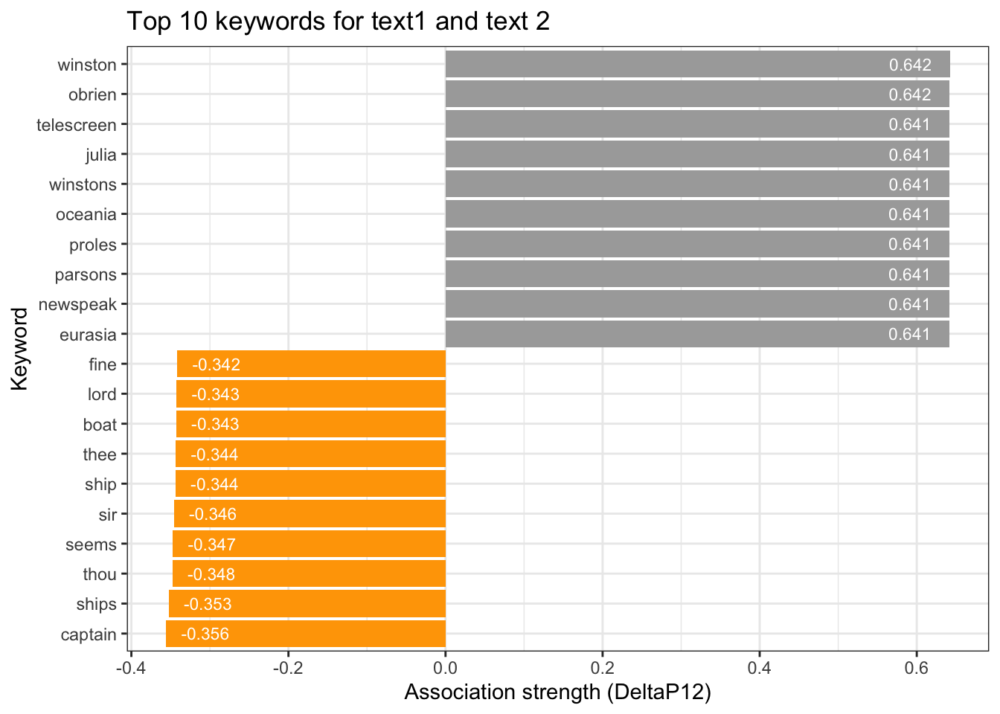
Text Classification
Text classification involves methods for categorizing text into predefined groups, like languages, genres, or authors. These categorizations usually rely on the frequency of word types, important terms, phonetic elements, and other linguistic characteristics such as sentence length and words per line.
Like many other text analysis methods, text classification often starts with a training dataset already marked with the necessary labels. You can create these training datasets and their associated features manually or opt for pre-built training sets offered by specific software or tools.
Text classification is a machine learning task where text documents are categorized into predefined classes or labels based on their content. It involves training a model on labeled data to learn patterns and then using that model to classify new, unlabeled documents. Text classification has numerous applications, such as spam detection, sentiment analysis, and topic categorization.
In the upcoming example, we’ll use phoneme frequency to classify a text. To get started, we’ll load a German text and break it down into its constituent phonetic elements.
# read in German text
German <- readLines("https://slcladal.github.io/data/phonemictext1.txt") %>%
stringr::str_remove_all(" ") %>%
stringr::str_split("") %>%
unlist()
# inspect data
head(German, 20) [1] "?" "a" "l" "s" "h" "E" "s" "@" "d" "e" ":" "n" "S" "t" "E" "p" "@" "n" "v"
[20] "O"We now do the same for three other texts - an English and a Spanish text as well as one text in a language that we will determine using classification.
# read in texts
English <- readLines("https://slcladal.github.io/data/phonemictext2.txt")
Spanish <- readLines("https://slcladal.github.io/data/phonemictext3.txt")
Unknown <- readLines("https://slcladal.github.io/data/phonemictext4.txt")
# clean, split texts into phonemes, unlist and convert them into vectors
English <- as.vector(unlist(strsplit(gsub(" ", "", English), "")))
Spanish <- as.vector(unlist(strsplit(gsub(" ", "", Spanish), "")))
Unknown <- as.vector(unlist(strsplit(gsub(" ", "", Unknown), "")))
# inspect data
head(English, 20) [1] "D" "@" "b" "U" "k" "I" "z" "p" "r" "\\" "@" "z" "E" "n" "t"
[16] "@" "d" "{" "z" "@" We will now create a table that represents the phonemes and their frequencies in each of the 4 texts. In addition, we will add the language and simply the column names.
# create data tables
German <- data.frame(names(table(German)), as.vector(table(German)))
English <- data.frame(names(table(English)), as.vector(table(English)))
Spanish <- data.frame(names(table(Spanish)), as.vector(table(Spanish)))
Unknown <- data.frame(names(table(Unknown)), as.vector(table(Unknown)))
# add column with language
German$Language <- "German"
English$Language <- "English"
Spanish$Language <- "Spanish"
Unknown$Language <- "Unknown"
# simplify column names
colnames(German)[1:2] <- c("Phoneme", "Frequency")
colnames(English)[1:2] <- c("Phoneme", "Frequency")
colnames(Spanish)[1:2] <- c("Phoneme", "Frequency")
colnames(Unknown)[1:2] <- c("Phoneme", "Frequency")
# combine all tables into a single table
classdata <- rbind(German, English, Spanish, Unknown)Phoneme | Frequency | Language |
|---|---|---|
- | 6 | German |
: | 569 | German |
? | 556 | German |
@ | 565 | German |
2 | 6 | German |
3 | 31 | German |
4 | 67 | German |
5 | 1 | German |
6 | 402 | German |
8 | 32 | German |
Now, we group the data so that we see, how often each phoneme is used in each language.
# convert into wide format
classdw <- classdata %>%
tidyr::spread(Phoneme, Frequency) %>%
replace(is.na(.), 0)Language | - | : | ? | ' | { |
|---|---|---|---|---|---|
English | 8 | 176 | 0 | 7 | 123 |
German | 6 | 569 | 556 | 0 | 0 |
Spanish | 5 | 0 | 0 | 0 | 0 |
Unknown | 12 | 286 | 0 | 12 | 125 |
Next, we must reshape our data to reflect the frequency of each phoneme categorized by language. This transformation aligns with our classifier’s design, which will employ Language as the dependent variable and utilize phoneme frequencies as predictors.
numvar <- colnames(classdw)[2:length(colnames(classdw))]
classdw[numvar] <- lapply(classdw[numvar], as.numeric)
# function for normalizing numeric variables
normalize <- function(x) {
(x - min(x)) / (max(x) - min(x))
}
# apply normalization
classdw[numvar] <- as.data.frame(lapply(classdw[numvar], normalize))Language | - | : | ? | ' | { |
|---|---|---|---|---|---|
English | 0.4285714 | 0.3093146 | 0 | 0.5833333 | 0.984 |
German | 0.1428571 | 1.0000000 | 1 | 0.0000000 | 0.000 |
Spanish | 0.0000000 | 0.0000000 | 0 | 0.0000000 | 0.000 |
Unknown | 1.0000000 | 0.5026362 | 0 | 1.0000000 | 1.000 |
Before turning to the actual classification, we will use a cluster analysis to see which texts the unknown text is most similar with.
# remove language column
textm <- classdw[, 2:ncol(classdw)]
# add languages as row names
rownames(textm) <- classdw[, 1]
# create distance matrix
distmtx <- dist(textm)
# perform clustering
clustertexts <- hclust(distmtx, method = "ward.D")
# visualize cluster result
plot(clustertexts, hang = .25, main = "")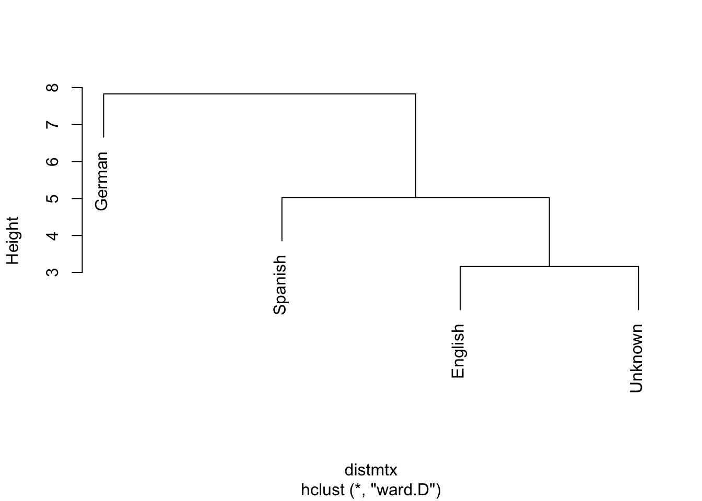
As indicated by the cluster analysis, the unidentified text forms a cluster alongside the English texts, strongly suggesting that the unknown text is likely in English.
Before we dive into the actual classification process, we’ll partition the data into two distinct sets: one excluding Unknown (our training set) and the other containing only Unknown (our test set). This segmentation allows us to train our model effectively and subsequently test its accuracy.
# create training set
train <- classdw %>%
filter(Language != "Unknown")
# create test set
test <- classdw %>%
filter(Language == "Unknown")Language | - | : | ? | ' | { |
|---|---|---|---|---|---|
English | 0.4285714 | 0.3093146 | 0 | 0.5833333 | 0.984 |
German | 0.1428571 | 1.0000000 | 1 | 0.0000000 | 0.000 |
Spanish | 0.0000000 | 0.0000000 | 0 | 0.0000000 | 0.000 |
Unknown | 1.0000000 | 0.5026362 | 0 | 1.0000000 | 1.000 |
In the final stage, we can put our classifier into action. Our chosen classifier is a k-nearest neighbor classifier, which operates on the principle of classifying an unknown element based on its proximity to the clusters within the training set.
# set seed for reproducibility
set.seed(12345)
# apply k-nearest-neighbor (knn) classifier
prediction <- class::knn(train[, 2:ncol(train)],
test[, 2:ncol(test)],
cl = train[, 1],
k = 3
)
# inspect the result
prediction[1] English
Levels: English German SpanishUsing the phoneme frequencies present in the unknown text, our knn-classifier confidently predicts that the text is in English. This prediction aligns with reality, as the text is, indeed, a section of the Wikipedia article for Aldous Huxley’s Brave New World. It’s worth noting that the training texts encompassed German, English, and Spanish translations of a subsection from Wikipedia’s article on Hermann Hesse’s Steppenwolf.
Part-of-Speech tagging
One widely used method for enhancing text data is part-of-speech tagging, which involves identifying the word type to which each word belongs. In the following section, we will apply part-of-speech tags to a brief English text.
Part-of-speech tagging is the process of assigning grammatical categories (such as noun, verb, adjective, etc.) to individual words in a text. It provides valuable insights into the syntactic and grammatical structure of a text, making it easier to analyze and extract meaningful information.
Part-of-speech tagging (POS tagging) is a natural language processing task where each word in a text is assigned a grammatical category, such as noun, verb, adjective, etc. It involves using linguistic patterns and context to determine the appropriate part of speech for each word. POS tagging is crucial for various language analysis tasks, including information retrieval, text summarization, and grammar analysis.
We start by selecting a portion of our example text.
# load text
sample <- base::readRDS(url("https://slcladal.github.io/data/alice.rda", "rb")) %>%
.[1:10] %>%
paste0(collapse = " ")
# inspect
substr(sample, 1, 200)[1] "Alice’s Adventures in Wonderland by Lewis Carroll CHAPTER I. Down the Rabbit-Hole Alice was beginning to get very tired of sitting by her sister on the bank, and of having nothing to do: once or twice"With our text ready for analysis, our next step is to download a pre-trained language model.
# download language model
m_eng <- udpipe::udpipe_download_model(language = "english-ewt")Once you’ve downloaded a model previously, you also have the option to load it directly from the location where you’ve stored it on your computer. In my case, I’ve placed the model in a folder labeled udpipemodels.
# load language model from your computer after you have downloaded it once
m_eng <- udpipe_load_model(here::here("udpipemodels", "english-ewt-ud-2.5-191206.udpipe"))We can now use the model to annotate out text.
# tokenise, tag, dependency parsing
text_anndf <- udpipe::udpipe_annotate(m_eng, x = sample) %>%
as.data.frame() %>%
dplyr::select(-sentence)
# inspect
head(text_anndf, 10) doc_id paragraph_id sentence_id token_id token lemma upos xpos
1 doc1 1 1 1 Alice Alice PROPN NNP
2 doc1 1 1 2 ’s 's PART POS
3 doc1 1 1 3 Adventures Adventure NOUN NNS
4 doc1 1 1 4 in in ADP IN
5 doc1 1 1 5 Wonderland Wonderland PROPN NNP
6 doc1 1 1 6 by by ADP IN
7 doc1 1 1 7 Lewis Lewis PROPN NNP
8 doc1 1 1 8 Carroll Carroll PROPN NNP
9 doc1 1 1 9 CHAPTER chapter PROPN NNP
10 doc1 1 1 10 I I PRON PRP
feats head_token_id dep_rel deps
1 Number=Sing 3 nmod:poss <NA>
2 <NA> 1 case <NA>
3 Number=Plur 0 root <NA>
4 <NA> 5 case <NA>
5 Number=Sing 3 nmod <NA>
6 <NA> 7 case <NA>
7 Number=Sing 3 nmod <NA>
8 Number=Sing 7 flat <NA>
9 Number=Sing 7 flat <NA>
10 Case=Nom|Number=Sing|Person=1|PronType=Prs 3 appos <NA>
misc
1 SpaceAfter=No
2 <NA>
3 <NA>
4 <NA>
5 <NA>
6 <NA>
7 <NA>
8 <NA>
9 <NA>
10 SpaceAfter=NoIt can be useful to extract only the words and their pos-tags and convert them back into a text format (rather than a tabular format).
tagged_text <- paste(text_anndf$token, "/", text_anndf$xpos, collapse = " ", sep = "")
# inspect tagged text
substr(tagged_text, 1, 200)[1] "Alice/NNP ’s/POS Adventures/NNS in/IN Wonderland/NNP by/IN Lewis/NNP Carroll/NNP CHAPTER/NNP I/PRP ./. Down/RB the/DT Rabbit/NNP -/HYPH Hole/NNP Alice/NNP was/VBD beginning/VBG to/TO get/VB very/RB ti"We could use the pos-tagged data to study differences in the distribution of word classes across different registers. or to find certain syntactic patterns in a collection of texts.
Names Entity Recognition
Named Entity Recognition (NER), also known as named entity extraction or entity extraction, is a text analysis technique that automatically identifies and extracts named entities from text, such as people, locations, brands, and more.
NER involves the process of extracting textual elements with characteristics commonly associated with proper nouns (e.g., locations, individuals, organizations) rather than other parts of speech. These characteristics may include non-sentence initial capitalization. Named entities are frequently retrieved in automated summarization and topic modeling.
NER can be accomplished through straightforward feature extraction, like extracting all non-sentence-initial capitalized words, or with the aid of training sets. Utilizing training sets—texts annotated to identify entities and non-entities—proves more effective when dealing with unknown or inconsistently capitalized data.
Named Entity Recognition (NER) is a natural language processing task that identifies and classifies words or phrases within text into predefined categories, such as persons, locations, organizations, and more. It employs contextual clues and language patterns to recognize these named entities. NER is essential for various applications, including information extraction, text summarization, and knowledge graph construction.
In this context, we will leverage the results obtained from part-of-speech tagging to extract terms tagged as named entities (the label PROPN in the upos column).
# tokenise, tag, dependency parsing
ner_df <- text_anndf %>%
dplyr::filter(upos == "PROPN") %>%
dplyr::select(token_id, token, lemma, upos, feats)
# inspect
head(ner_df) token_id token lemma upos feats
1 1 Alice Alice PROPN Number=Sing
2 5 Wonderland Wonderland PROPN Number=Sing
3 7 Lewis Lewis PROPN Number=Sing
4 8 Carroll Carroll PROPN Number=Sing
5 9 CHAPTER chapter PROPN Number=Sing
6 3 Rabbit rabbit PROPN Number=SingThe obtained results can be further processed and categorized into various types such as persons, locations, dates, and other entities. This initial insight should provide you with a starting point for your analysis and exploration.
Dependency Parsing Using UDPipe
In addition to part-of-speech tagging, we can create visual representations illustrating the syntactic relationships between the various components of a sentence.
Dependency parsing is a linguistic analysis technique that reveals the grammatical structure of sentences by identifying how words relate to one another. It establishes hierarchical relationships, such as subject-verb, modifier-noun, or object-verb connections, within a sentence. Dependency parsing is fundamental for understanding sentence syntax, semantic roles, and linguistic relationships, playing a critical role in various natural language processing tasks like sentiment analysis, information extraction, and machine translation.
To achieve this, we first construct an object containing a sentence (in this instance, the sentence John gave Mary a kiss), and subsequently, we utilize the textplot_dependencyparser function to plot or visualize the dependencies.
# parse text
sent <- udpipe::udpipe_annotate(m_eng, x = "John gave Mary a kiss.") %>%
as.data.frame()
# inspect
head(sent) doc_id paragraph_id sentence_id sentence token_id token lemma
1 doc1 1 1 John gave Mary a kiss. 1 John John
2 doc1 1 1 John gave Mary a kiss. 2 gave give
3 doc1 1 1 John gave Mary a kiss. 3 Mary Mary
4 doc1 1 1 John gave Mary a kiss. 4 a a
5 doc1 1 1 John gave Mary a kiss. 5 kiss kiss
6 doc1 1 1 John gave Mary a kiss. 6 . .
upos xpos feats head_token_id dep_rel deps
1 PROPN NNP Number=Sing 2 nsubj <NA>
2 VERB VBD Mood=Ind|Tense=Past|VerbForm=Fin 0 root <NA>
3 PROPN NNP Number=Sing 2 iobj <NA>
4 DET DT Definite=Ind|PronType=Art 5 det <NA>
5 NOUN NN Number=Sing 2 obj <NA>
6 PUNCT . <NA> 2 punct <NA>
misc
1 <NA>
2 <NA>
3 <NA>
4 <NA>
5 SpaceAfter=No
6 SpacesAfter=\\nWe now generate the plot.
# generate dependency plot
dplot <- textplot::textplot_dependencyparser(sent, size = 3)
# show plot
dplot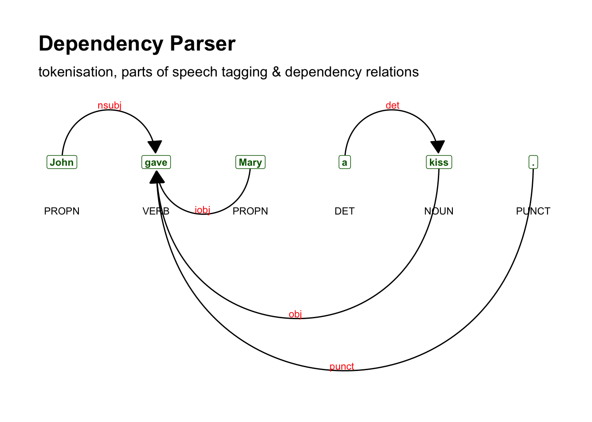
Dependency parsing proves invaluable for a range of applications, including analyzing the relationships within sentences and shedding light on the roles of different elements. For instance, it helps distinguish between the agent and the patient in actions like crimes or other activities. This parsing technique enables a deeper understanding of the underlying grammatical and semantic structure of sentences, making it a valuable tool for linguistic analysis, information extraction, and natural language understanding.
Citation & Session Info
Schweinberger, Martin. 2023. Practical Overview of Selected Text Analytics Methods. Brisbane: The Language Technology and Data Analysis Laboratory (LADAL). url: https://ladal.edu.au/textanalysis.html (Version 2023.05.31).
@manual{schweinberger2023ta,
author = {Schweinberger, Martin},
title = {Practical Overview of Selected Text Analytics Methods},
note = {https://ladal.edu.au/textanalysis.html},
year = {2023},
organization = {The Language Technology and Data Analysis Laboratory (LADAL)},
address = {Brisbane},
edition = {2023.05.31}
}sessionInfo()R version 4.4.1 (2024-06-14)
Platform: aarch64-apple-darwin20
Running under: macOS Sonoma 14.6.1
Matrix products: default
BLAS: /Library/Frameworks/R.framework/Versions/4.4-arm64/Resources/lib/libRblas.0.dylib
LAPACK: /Library/Frameworks/R.framework/Versions/4.4-arm64/Resources/lib/libRlapack.dylib; LAPACK version 3.12.0
locale:
[1] en_US.UTF-8/en_US.UTF-8/en_US.UTF-8/C/en_US.UTF-8/en_US.UTF-8
time zone: Australia/Brisbane
tzcode source: internal
attached base packages:
[1] stats graphics grDevices utils datasets methods base
other attached packages:
[1] tidyr_1.3.1 ggraph_2.2.1
[3] quanteda.textplots_0.95 quanteda.textstats_0.97.2
[5] wordcloud2_0.2.1 tidytext_0.4.2
[7] udpipe_0.8.11 tm_0.7-14
[9] NLP_0.3-0 quanteda_4.1.0
[11] flextable_0.9.7 ggplot2_3.5.1
[13] stringr_1.5.1 dplyr_1.1.4
loaded via a namespace (and not attached):
[1] tidyselect_1.2.1 viridisLite_0.4.2 farver_2.1.2
[4] viridis_0.6.5 fastmap_1.2.0 tweenr_2.0.3
[7] fontquiver_0.2.1 janeaustenr_1.0.0 digest_0.6.37
[10] lifecycle_1.0.4 tokenizers_0.3.0 magrittr_2.0.3
[13] compiler_4.4.1 rlang_1.1.4 tools_4.4.1
[16] igraph_2.1.1 utf8_1.2.4 sna_2.8
[19] data.table_1.16.2 knitr_1.48 labeling_0.4.3
[22] askpass_1.2.1 stopwords_2.3 graphlayouts_1.2.0
[25] htmlwidgets_1.6.4 here_1.0.1 xml2_1.3.6
[28] klippy_0.0.0.9500 withr_3.0.2 purrr_1.0.2
[31] textplot_0.2.2 grid_4.4.1 polyclip_1.10-7
[34] fansi_1.0.6 gdtools_0.4.0 colorspace_2.1-1
[37] scales_1.3.0 MASS_7.3-61 cli_3.6.3
[40] rmarkdown_2.28 ragg_1.3.3 generics_0.1.3
[43] rstudioapi_0.17.1 cachem_1.1.0 ggforce_0.4.2
[46] network_1.18.2 splines_4.4.1 assertthat_0.2.1
[49] parallel_4.4.1 vctrs_0.6.5 Matrix_1.7-1
[52] jsonlite_1.8.9 slam_0.1-54 fontBitstreamVera_0.1.1
[55] ggrepel_0.9.6 systemfonts_1.1.0 glue_1.8.0
[58] statnet.common_4.10.0 codetools_0.2-20 stringi_1.8.4
[61] gtable_0.3.6 munsell_0.5.1 tibble_3.2.1
[64] pillar_1.9.0 htmltools_0.5.8.1 openssl_2.2.2
[67] R6_2.5.1 textshaping_0.4.0 rprojroot_2.0.4
[70] tidygraph_1.3.1 evaluate_1.0.1 lattice_0.22-6
[73] SnowballC_0.7.1 memoise_2.0.1 fontLiberation_0.1.0
[76] class_7.3-22 Rcpp_1.0.13 zip_2.3.1
[79] uuid_1.2-1 fastmatch_1.1-4 coda_0.19-4.1
[82] nlme_3.1-166 gridExtra_2.3 nsyllable_1.0.1
[85] mgcv_1.9-1 officer_0.6.7 xfun_0.49
[88] pkgconfig_2.0.3 References
Bernard, H Russell, and Gery Ryan. “Text Analysis.” Handbook of Methods in Cultural Anthropology.
Kabanoff, Boris. “Introduction: Computers Can Read as Well as Count: Computer-Aided Text Analysis in Organizational Research.” Journal of Organizational Behavior, 507–11.
Lindquist, Hans. Corpus Linguistics and the Description of English. Edinburgh: Edinburgh University Press.
Popping, Roel. Computer-Assisted Text Analysis. Sage.
Footnotes
If you want to render the R Notebook on your machine, i.e. knitting the document to html or a pdf, you need to make sure that you have R and RStudio installed and you also need to download the bibliography file and store it in the same folder where you store the Rmd file.↩︎